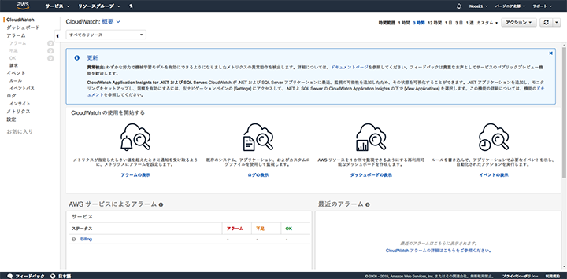

Amazon AWS に登録する・1円も課金したくないので請求アラームも設定する
この前、GCP (Google Cloud Platform) に登録し、永久無料枠だけを使うため1円も課金されないよう予算アラートを設定した。
- 永久無料枠で Google Compute Engine (GCE) インスタンスを立ち上げる : その1
- 永久無料枠で Google Compute Engine (GCE) インスタンスを立ち上げる : その2
今回は AWS に登録して、コチラも永久無料枠だけを使う狙いで、1円も課金されないよう、請求アラームを設定してみる。画像多めでお送り。
目次
AWS に登録する
まずは AWS に登録しよう。以下のページに飛び、「コンソールにサインイン」を選んだら「新しい AWS アカウントの作成」を選ぶ。
AWS アカウントは、Amazon.com や Amazon.co.jp のアカウントとは全く別に作成する。

住所入力。
請求用のクレジットカードを入力。

本人確認のため携帯電話番号を入れる。

SMS で認証コードが届くので、それを入れる。
認証完了。
サポートプランは無料の「ベーシックプラン」を選択。

登録ができたら、トップ画面に戻るのでログインする。
ログインできたら問題なく登録完了。
請求アラートの受信設定
続いて請求アラートを設定する。AWS トップ画面の右上、「アカウント」メニューから「請求情報とコスト管理」を選ぶ。

「請求情報とコスト管理ダッシュボード」画面に移動したら、左メニューから「Billing の設定」を選ぶ。

この「設定画面」の「コスト管理設定」より、
- 無料利用枠の使用のアラートの受信
- 請求アラートを受け取る
にチェックを入れて「設定の保存」を選ぶ。

コレで無料枠を超えた時にメールでアラートを受信できるようになる。
1円でも課金されたらアラームを通知する
ココまでの画面では「アラート」と表現しているのだが、ココから先の画面では「アラーム」という表現になる。CloudWatch という AWS の請求額などを監視するサービスを利用して、1円でも課金された時にアラームを鳴らすようにする。公式のガイドは以下。
先程の「設定」画面にある「請求アラートを管理する」リンクなどから、CloudWatch コンソールを開く。開き方が分からなければ以下のリンクに遷移する。

上のような画面に移動できれば OK。右上のリージョンで「バージニア北部」が選ばれていること。
左メニューから「アラーム」を選び、「アラームの作成」を選択する。
「メトリクスと条件の指定」画面に移動したら「メトリクスの選択」ボタンを押下する。
「メトリクスの選択」ダイアログが開いたら「請求」メトリクスを選択する。

続いて「概算合計請求額」を選択する。
出てきた画面で「通貨」から「USD」(メトリクス名「EstimatedCharges」) にチェックを入れ、「メトリクスの選択」ボタンを押下する。

次の画面に移動したら、前半は基本的にはデフォルトのまま進めて良い。
- 統計：最大
- 期間：6時間
「条件」欄で、
- しきい値の種類：静的
- アラーム条件を定義：以上
- しきい値：
0.01USD
という風に指定する。コレで、0.01ドル、だいたい1円程度の課金がされた時に、アラームを鳴らす設定になる。

次の画面で、アラーム通知を送る先を指定する。登録直後だと SNS トピックを作っていないと思うので、
- 新しいトピックの作成
を選択し、
- 通知を受け取る E メールエンドポイント
に任意のメルアドを入れて「トピックの作成」を選択する。

SNS トピックが作成できたら次に進む。
最後に「説明の追加」画面で適当な名前をつける。
コレで OK。最後にプレビューを確認して、登録する。
以下のように自分が作った請求アラームが追加されていれば完了。
この請求アラーム、0.01ドルを超過した時にメールをよこすだけなので、その後課金が続いている時に気付きにくい。そこで、500円分くらい請求額が増えた時にも同様にアラームを鳴らすようにしておくと、不要な課金が増えていることに気が付きやすくなる。
ということで、同様の手順を踏み、0.01 USD ではなく 5.00 USD を条件に設定した請求アラームをもう一つ作っておく。

こんな感じ。
最初は「データ不足」みたいな表示になっているが、しばらくすると請求額をきちんと監視できるようになる。何も使っていなければ当然請求額は0円なので、この CloudWatch コンソールでは全てが正常に見えているはずだ。
以上
コレで AWS への登録と、不要な課金に気が付くための請求アラームの設定が完了した。
AWS は永久無料枠 (ティアタイプ「無期限無料」) で
- Amazon DynamoDB : 25GB 分
- AWS Lambda : 100万リクエスト/月
などが使えるので、無料枠内でうまく活用していきたい。